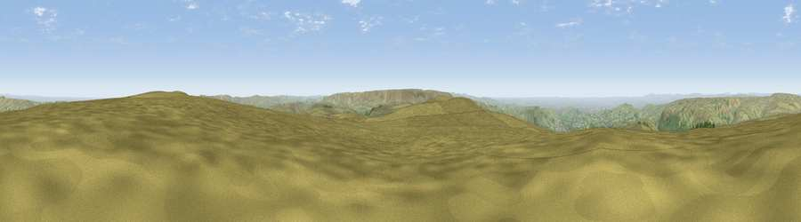

Viewpoint c7918_8185
#10004 in England · top 12% of its area beats it · — · open accessWhere it is
The exact computed spot (SK 09275 95925). Click the marker for map links.
Public access: this spot lies on mapped open-access land (CRoW Act 2000) — you may roam here on foot. Computed from Natural England's CRoW access layer and OpenStreetMap rights of way — not the legal definitive map. Always verify locally.
The view, rendered

A 360° render of this exact spot computed from the terrain model, tree cover and land cover — summer colours, afternoon light, calibrated against photographs of famous viewpoints. Real trees, hedges and buildings will differ in detail.
The panorama
Grey silhouette: terrain skyline in each direction (720 bearings, Earth curvature and refraction included). Dashed green: skyline with trees (+15 m) and buildings (+8 m) as obstacles. Blue strip: how far the ground is visible on each bearing.
Where the view opens
Wedge length = distance to the farthest visible ground on that bearing (vegetation-aware). Rings at 10, 25 and 50 km.
What fills the view
89% grassland · 7% woodland · 3% built-up ·
Angular shares of the visible panorama (visual magnitude), not map area. Landscape diversity 0.18 (0–1 Shannon).
Key numbers
More beautiful places nearby
The staircase of upgrades: each row has a higher view potential than everything closer. Driving times are estimates from straight-line distance, calibrated against real road routing — check an actual route before setting out.
| Place | Direction | Drive | Score |
|---|---|---|---|
| Viewpoint near Glossop | SSW · 1 km | ~4 min | 67.8 |
| Viewpoint near Little Hayfield | SSW · 7 km | ~14 min | 70.0 |
| Viewpoint near Upper Booth | S · 9 km | ~18 min | 70.2 |
| Viewpoint near Upper Booth | SSW · 9 km | ~18 min | 72.6 |
| Wild Bank | W · 11 km | ~20 min | 76.2 |
| Viewpoint near Carrbrook | WNW · 11 km | ~21 min | 77.1 |
| Viewpoint near Edenfield | NW · 35 km | ~54 min | 77.5 |
| Viewpoint near Mow Cop | SSW · 45 km | ~65 min | 78.9 |
53.45999, -1.86178 · source: screening · position refined by local search. Computed location — check access rights before visiting.